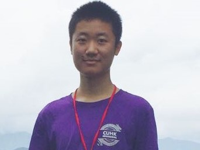

|  | Chen BAI, Ph.D. student |
I will attend The Chinese University of Hong Kong in the Fall of 2020, as a Ph.D. student at the Department of Computer Science and Engineering under the supervision of Prof. Bei Yu. Currently, I major in Software Engineering and will receive my B.Eng. from The University of Electronic Science and Technology of China (UESTC) this summer.
Email: baichen318@foxmail.com / baichen318@gmail.com
GitHub: baichen318
LinkedIn: Chen BAI
DNN Acceleration
Software & Hardware Co-design
Ph.D. Computer Science and Engineering, The Chinese University of Hong Kong, Aug. 2020 -
B.S. Software Engineering, University of Electronic Science and Technology of China, Sep. 2016 - Jul. 2020
SenseTime, Beijing, P.R. China, Oct. 2019 - Apr. 2020
Research Intern, Intelligent Video Generation Group
Topic: Deep Learning for Talking Face
Intel Asia-Pacific R. & D. Center, Shanghai, P.R. China, Feb. 2019 - Jul. 2019
Engineering Intern, Web Runtime Optimization Group
Topic: Optimization of Chrome for IA (i.e., Intel Architecture) Chromebooks
Visiting Student, University of Maryland, Washington, D.C., U.S.A., Jul. 2017 - Aug. 2018
Topic: Participate leadership-related courses, School of Public Policy
Full Postgraduate Scholarship, The Chinese University of Hong Kong, 2020 - 2024
Outstanding Graduate, The Education Department of Sichuan Province, 2020
National Scholarship, Ministry of Education, 2017 - 2018
National Scholarship, Ministry of Education, 2016 - 2017
Meritorious Winner of Interdisciplinary Contest on Modeling (i.e., ICM), COMAP, MAA, ASA, INFORMS, 2018